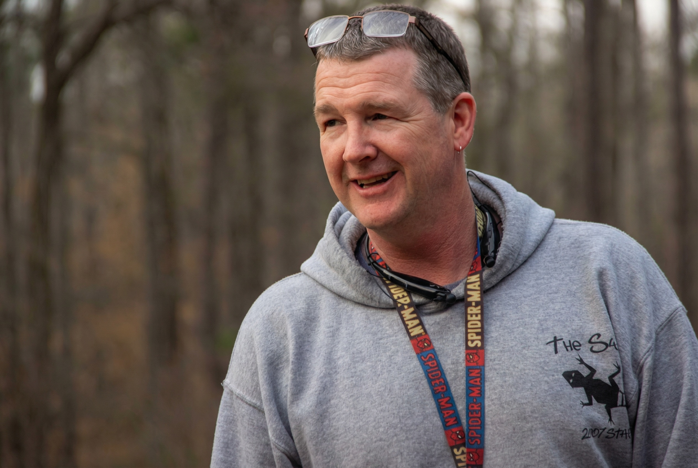

Healthy Culture. Happy Campers.
We want to equip camp leaders to build healthy cultures that shape lives for generations.
We partner with camp directors and boards to clarify mission, align leadership, translate values into behavior, and implement practical systems that support long-term health—without losing the joy that makes camp special.
Trusted by faith-based and independent camps across diverse contexts.